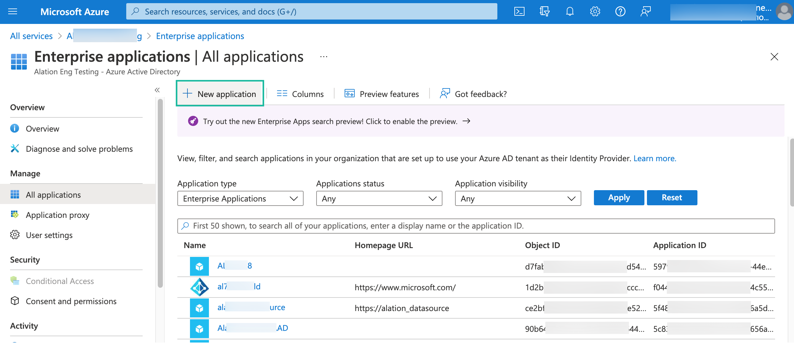
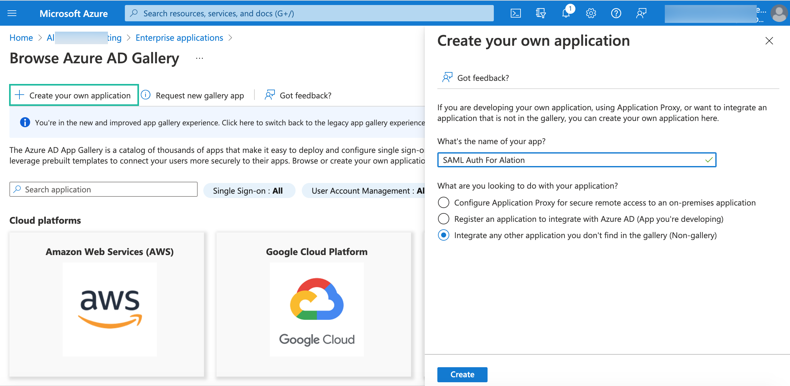
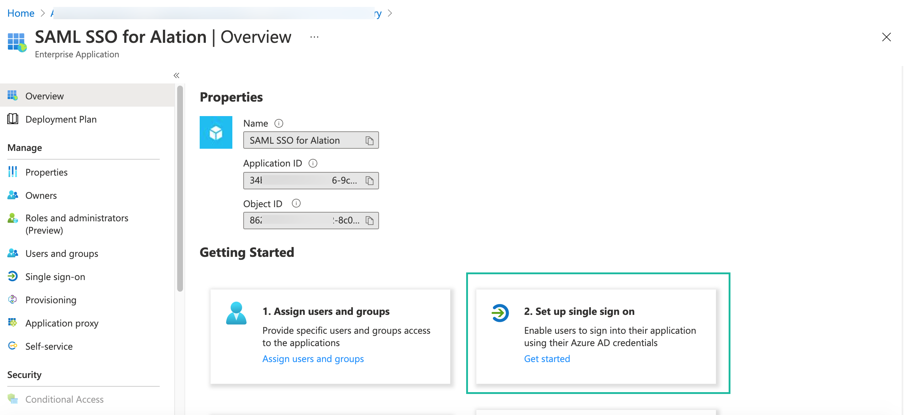
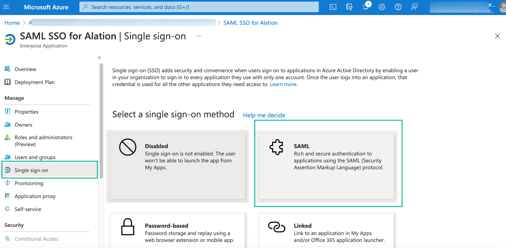
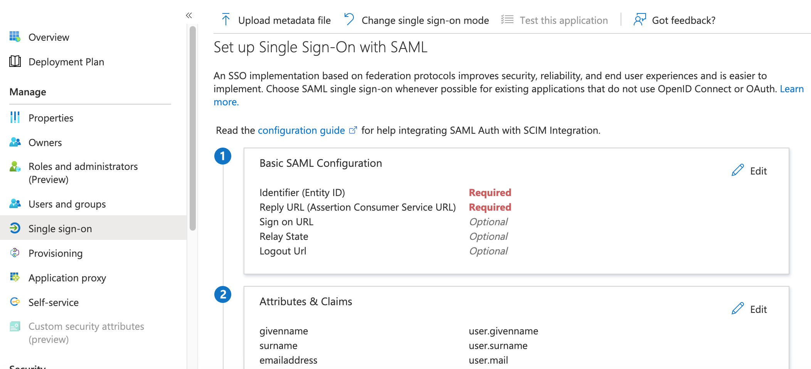
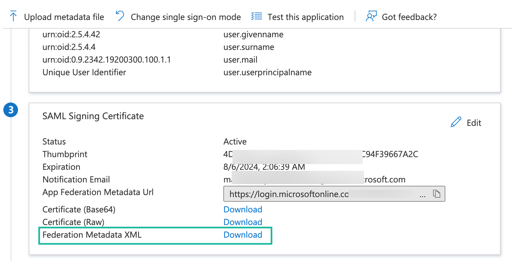
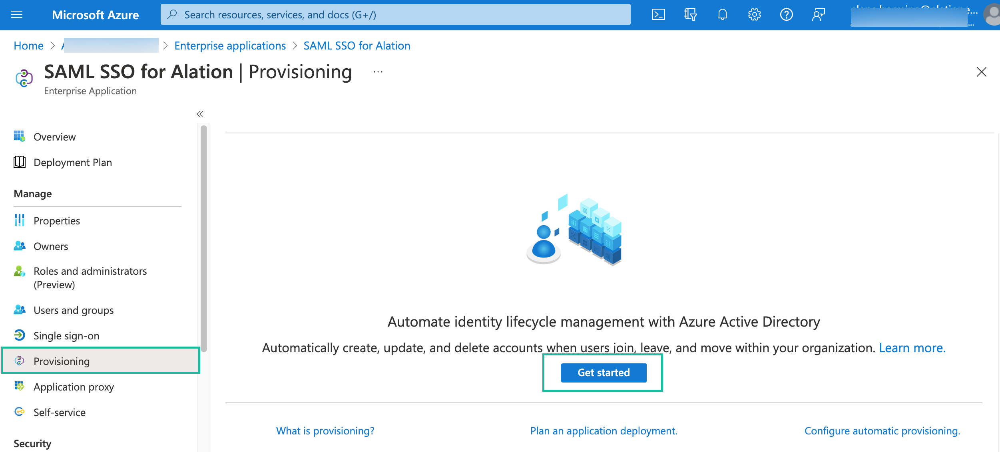
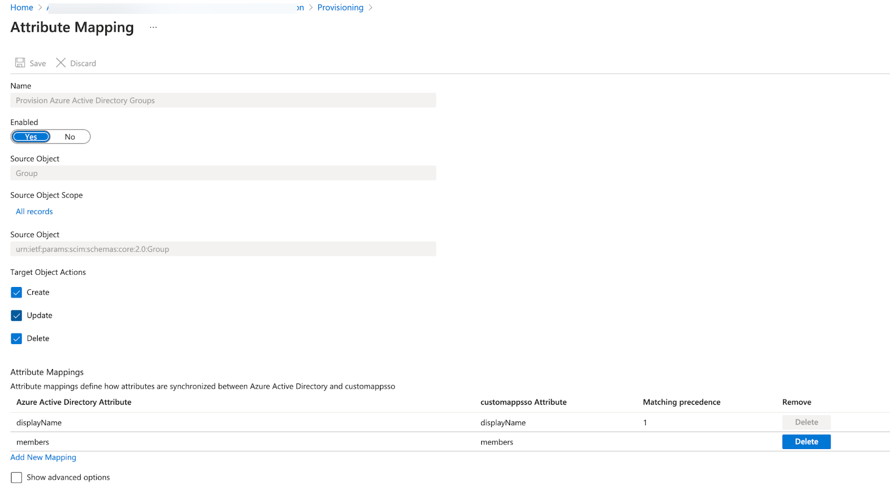

Set Up SAML and SCIM Integration in Azure AD¶
Alation Cloud Service Applies to Alation Cloud Service instances of Alation
Customer Managed Applies to customer-managed instances of Alation
Applies from version 2021.4
Creating a SAML Application and Configuring Single Sign-On¶
Create an Application for SAML Authentication¶
Use the steps in this section to create an enterprise application in Azure Active Directory (AD) that can be used for SAML authentication and SCIM provisioning with Alation.
Note
If you are already using SAML SSO with Azure AD and wish to add user and group provisioning over SCIM, you can edit your existing SAML application and add Provisioning.
Your existing application must allow Provisioning. Some types of Azure AD applications may not support editing the Provisioning settings. If that is the case, you can create a new Azure AD application to use for SCIM sync with Alation and configure Provisioning only. Your existing SAML application will be used for SAML authentication, while the second application will be used for user and group management with SCIM. On how to configure Provisioning, see Configuring SCIM Provisioning below.
To create an application for SAML SSO:
Log in to the Azure portal.
Navigate to Azure Active Directory > Enterprise applications.
Click New application:
This takes you to the Browse AD Gallery screen. Click Create your own application to create a non-gallery application:
Provide a name for the application, leave selected Integrate any other application you don’t find in the gallery, and click Create.
This action should take you to the properties page of your new application. Click on the Get started link in the Set up single sign on block:
On the Single sign-on page that opens, select SAML:
On the next screen, click Edit in the Basic SAML Configuration block:

For Basic SAML Configuration, provide the values given below, substituting
<base_URL>with your Alation URL (for example: mycatalog.alation-test.com):
Identifier (Entity ID) =
https://alation.com/Reply URL (Assertion Consumer Service URL) =
https://<base_URL>/saml2/acs/Sign on URL =
https://<base_URL>/
Save.
Click Edit in the User Attributes & Claims block. Configure attribute mappings based on the SAML attributes available in the user profile. For information about SAML attributes required by Alation, see Configure SAML Attributes.
Use the following recommendations:
{kind=link}
{kind=link}
Alation does not require a SAML Signing Certificate. However, if your environment requires the use of such a certificate, you can set it up.
Download the Federation Metadata XML from under the option SAML Signing Certificate. This is the idp_metadata.xml file that needs to be uploaded to Alation.
To test the setup, click Test in the Test single sign-on with <your_app_name> block.
{kind=link}
Next, assign users and groups to your app.
Assign Users and Groups to the App¶
On the properties page of the application, click on the Users and groups option in the left sidebar.
Click Add user/group. Search and select the users and groups and assign them to the app.
Complete the Configuration in Alation¶
Log in to Alation and go to Admin Settings > Authentication.
In the Account Authentication Method table, click Edit for SAML. The SAML properties page will open in a new browser tab.
Complete the SAML configuration following the instructions on this page and upload the idp_metadata.xml file.
Click Save. Note that saving the properties does not activate SAML yet.
Warning
Before activating SAML in Alation, make sure that the SAML SSO application in your IdP has all the required user assignments. Make sure that users with the Server Admin roles have been assigned to the application so that they can log in and manage the application after SAML is activated.
Go back to the browser tab with the Authentication page.
You can activate SAML authentication by clicking Activate for SAML in the Account Authentication Method table.
Next, you can configure SCIM Provisioning if you wish to manage users and groups from the Active Directory.
Configuring SCIM Provisioning¶
STEP 1: Configure SCIM Sync on the Alation Server¶
Perform the configuration for SCIM on the Alation server using the steps in Configure SCIM Integration. As a result, you will have a SCIM authentication token from Alation that should be provided in the properties of your Azure AD app.
STEP 2: Configure SCIM Provisioning in Azure AD¶
Log in to the Azure Portal.
Open the properties page of your SAML SSO application in Azure AD.
Click on the Provisioning tab on the left and click Get Started on the Provisioning page:
For Provisioning Mode, select Automatic.
Provide Admin Credentials:
Tenant URL:
https://<base_URL>/scim/v2/Secret Token: provide the token value from Alation
Click the Test Connection button to verify the connection. If the connection can be established successfully, you will be able to configure Group and User attribute mappings.
Under Mappings, click Provision Azure Active Directory Groups.
Under Target Object Actions, make sure that all actions are selected:
Create
Update
Delete
Remove the attribute mapping:
ObjectId - ExternalId, only leaving the attributesdisplayNameandmembers. Your configuration should be similar to the following:Save.
Under Mappings, click Provision Azure Active Directory Users.
Remove most of the attributes, only leaving the following list:
userPrincipalNameSwitch([IsSoftDeleted], , “False”, ”True”, “True”, “False”)displayNamemailgivenNamesurname
Save.
Check that the users and groups that need to be synced to Alation have been added under the Users and Groups tab of the application.
Perform provisioning. See How Application Provisioning works in Azure Active Directory in Azure AD documentation for details.
Important
You can monitor the provisioning process by tailing the scim-debug.log file from the Alation shell. See Monitoring SCIM Provisioning below.
{kind=link}
The users and groups that are pushed from Azure AD to Alation should be created in Alation after the push. If user or group properties change, the changes will be reflected in Alation after the automatic provisioning (40 min after the change) or after provisioning is performed on demand. If a user or group is unassigned from the application, this user will be suspended in Alation and the corresponding SCIM group will be deleted.
Monitoring SCIM Provisioning¶
When you are performing a SCIM push from Azure AD on customer-managed instances of Alation, you can monitor the process by tailing the scim-debug.log file from the Alation shell. To tail the log file:
Use SSH to connect to the Alation server.
Enter the Alation shell using the following command:
sudo /etc/init.d/alation shell
Navigate to the directory /opt/alation/site/logs.
To tail the scim-debug.log file:
tail -f scim-debug.log
To exit the tail mode, press Ctrl+C
Limitations¶
Nested Groups Are Not Supported¶
Currently, Microsoft Azure AD does not support reading or provisioning nested groups.
SCIM API Request Throttling¶
Alation supports a maximum of 20/sec read and write throttle for its SCIM endpoints. If your account exceeds this threshold, Alation returns a 400 HTTP status code (“Bad Request”). Note that this request limit may occur during the initial provisioning when a relatively large number of requests are made to initially provision all users and groups.